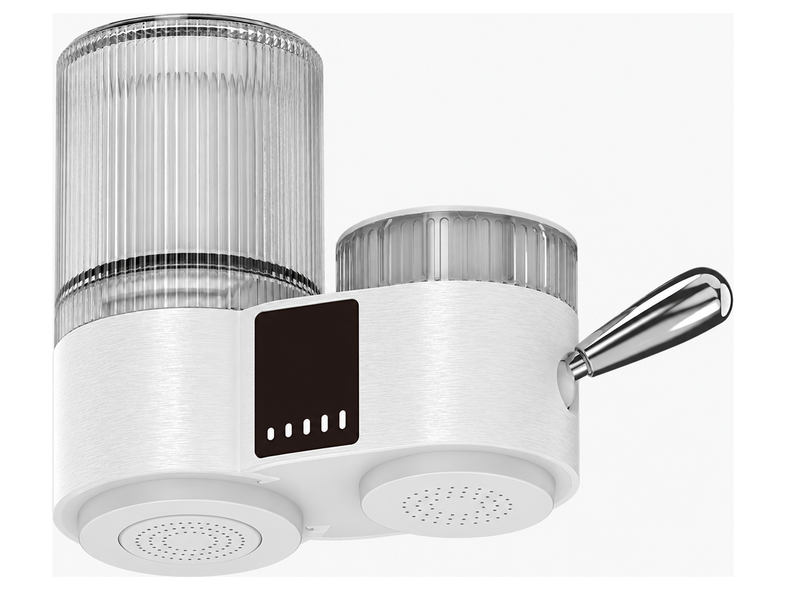

Wasserhahn
WasserhahnRP-F01
Klassischer Wasserhahnfilter
SKU: RP-F01
MOQ: Auf Anfrage zu bestätigen
Startseite/Produkte/Wasserhahnfilter/ RP-F08

Wasserhahnfilter
Wasserhahnfilter (JK-D1) — drei Optionen. RP-F08 führt die Familie an.
RP-F08 ist eine Wasserhahnfilter-Familie: drei Optionen auf derselben 1,5–2 L/min, 2–5 µm Keramikplattform — das Filterlebensdauer-Anzeige-Modell (100% Digitalanzeige, wasserbetriebenes blaues Licht); das Mikroblasen-Modell (Doppelauslässe, 1–100 µm Mikroblasen für Hautpflege und Reinigung); und das Schaumreinigungs-Modell (vier Modi, Hand-Schaumsprüher). Spezifikationen werden pro Modell und Auftrag bestätigt.
Anzeige- und Ausführungsoptionen werden pro Bestellung bestätigt.
Spannung / Frequenz ist je nach Zielland konfigurierbar. Andere Konfigurationen werden pro Auftrag bestätigt.
RP-F08 ist eine Wasserhahnfilter-Familie (JK-D1) mit drei Optionen auf derselben 1,5–2 L/min, 2–5 µm Keramikplattform: das Filterlebensdauer-Anzeige-Modell (100% Digitalanzeige, wasserbetriebenes blaues Licht), das Mikroblasen-Modell (Doppelauslässe, 1–100 µm Mikroblasen für Hautpflege und Reinigung) und das Schaumreinigungs-Modell (vier Modi, Hand-Schaumsprüher). Alle drei teilen eine Kartuschenlebensdauer von 3–6 Monaten, eine Wassertemperatur von 5–38°C, einen Betriebsdruck von 0,1–0,4 MPa und kommunales Leitungswasser als Wasserquelle. Die Abmessungen werden pro Bestellung bestätigt.
Wie hoch ist die Mindestbestellmenge?
Die erste Bestellung beträgt 200 Stück pro Modell, Nachbestellungen 500 Stück.
Kann ich vor einer Großbestellung ein Muster bestellen?
Ja. Muster sind in 15 Tagen fertig, und die Mustergebühr wird bei Ihrer ersten Großbestellung erstattet. Großbestellungen dauern 40 Tage nach Musterfreigabe und werden FOB Shenzhen versandt.
Wie lange hält die Kartusche?
Die Kartuschenlebensdauer beträgt 3–6 Monate für alle drei Modelle.
Drei Wasserhahnfilter-Optionen — anfragen als RP-F08 und Option angeben (Filterlebensdauer-Anzeige, Mikroblasen oder Schaumreinigung). Das Filterlebensdauer-Anzeige-Modell kommt mit dunkler oder transparenter Abdeckung.
Bewegen Sie die Maus über ein Variantenbild, um die Spezifikationen zu sehen. Auf Touchscreens tippen Sie auf ein Bild.



Vollständige Spezifikationen für jedes Modell, nebeneinander. Die Spezifikationstabelle weiter unten zeigt die Werte von RP-F08.
| Spezifikation | RP-F08-1 — Filterlebensdauer-Anzeige (JK-D1) | RP-F08-2 — Mikroblasen (JK-H1) | RP-F08-3 — Schaumreinigung (JK-E2) |
|---|---|---|---|
| Typ | Intelligenter Wasserhahnreiniger | Mikroblasen-Wasserhahnreiniger für die Hautpflege | 2-in-1-Schaumreinigungs-Wasserhahnfilter |
| Form | Vertikale Kartusche auf horizontaler Basis | Horizontaler Kugeleis-Korpus | Breite Basis, zwei Kartuschen + Spiralschlauch + Handbrause |
| Display | 100 % digitale Filterlebensdauer-Anzeige | Keine | 100-%-Anzeige bei einigen Varianten |
| Auslässe | Einzelauslass (gefiltert) | Doppelt: Reinwasser + Mikroblasenwasser | Vier Modi: Rohwasser / Reinwasser / Schaum / Dusche |
| Sonderfunktion | Wasserbetriebenes blaues Licht; Aufsteckabdeckung; Griffhebel | Mikroblasen 1–100 µm; reinigt und entfernt Pestizidrückstände | Schaumreinigung per Knopfdruck; Hand-Schaumsprüher |
| Farbes | Dunkelblau, Grau, Gelb, Silber | Champagnergold, Silber-Blau, Lila | Dunkel, Beige, Weiß, Silber |
| Nenndurchfluss | 1.5-2 L/min | 1.5-2 L/min | 1.5-2 L/min |
| Filtrationsgenauigkeit | 2-5 µm (Keramik) | 2-5 µm (Keramik) | 2-5 µm (Keramik) |
| Wassertemperatur | 5-38°C | 5-38°C | 5-38°C |
| Betriebsdruck | 0.1-0.4 MPa | 0.1-0.4 MPa | 0.1-0.4 MPa |
| Wasserquelle | Kommunales Leitungswasser | Kommunales Leitungswasser | Kommunales Leitungswasser |
| Kartuschenlebensdauer | 3-6 Monate | 3-6 Monate | 3-6 Monate |
| Abmessungen | Je Auftrag bestätigt | Je Auftrag bestätigt | Je Auftrag bestätigt |
Nenndurchfluss, Filtrationsgenauigkeit, Wassertemperatur, Betriebsdruck, Wasserquelle und Kartuschenlebensdauer sind bei allen drei Modellen gleich (Katalogwerte). Die Modelle unterscheiden sich in Form, Anzeige, Auslässen und Sonderfunktion. Das Filterlebensdauer-Anzeige-Modell kommt mit dunkler oder transparenter Abdeckung.
7 Spezifikationszeilen aus dem ROPureOEM-Katalog.
| Nenndurchfluss | 1.5-2 L/min |
|---|---|
| Filtrationsgenauigkeit | 2-5 µm (Keramik) |
| Wassertemperatur | 5-38°C |
| Betriebsdruck | 0.1-0.4 MPa |
| Wasserquelle | Kommunales Leitungswasser |
| Kartuschenlebensdauer | 3-6 Monate |
| Abmessungen | Je Auftrag bestätigt |
Die Spezifikationen stammen aus dem ROPureOEM-Katalog. Wenn ein Wert noch nicht bestätigt ist, wird er als „Je Auftrag bestätigt“ gelistet — wir veröffentlichen keine unbestätigten Zahlen.
WasserhahnKlassischer Wasserhahnfilter
SKU: RP-F01
MOQ: Auf Anfrage zu bestätigen
 Wasserhahn
Wasserhahn360° drehbarer Wasserhahnfilter
SKU: RP-F02
MOQ: Auf Anfrage zu bestätigen
 Wasserhahn
WasserhahnWasserhahnfilter aus Carbonfaser
SKU: RP-F06
MOQ: Auf Anfrage zu bestätigen
 Wasserhahn
WasserhahnWasserhahnfilter — integriert
SKU: RP-F10
MOQ: Auf Anfrage zu bestätigen